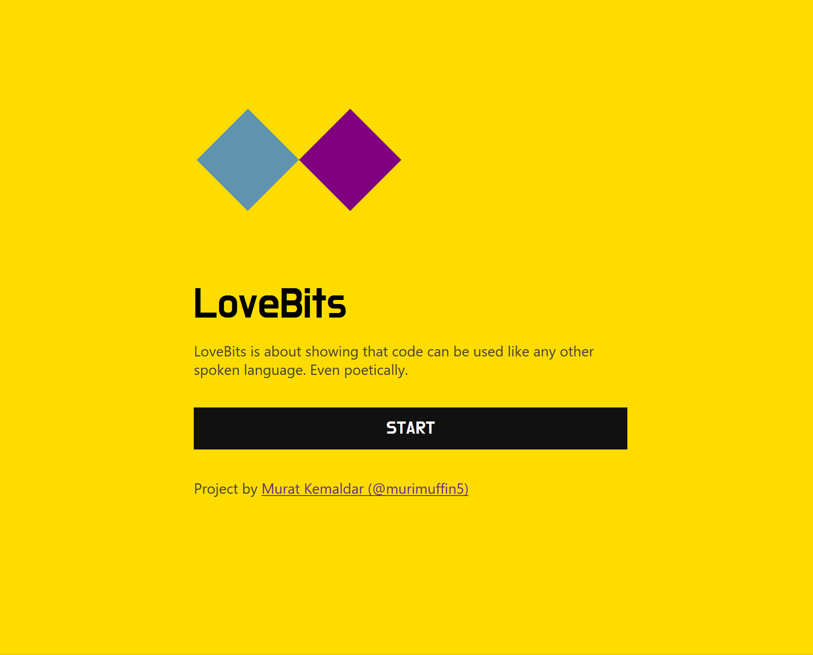

Esta es una serie de ejercicios (en curso) de programación creativa
inspirados en el trabajo de Murat Kemaldar. Desafortunadamente el sitio
web LoveBites ya no está disponible. Sin embargo la siguiente imagen
puede dar una idea de su propuesta creativa.

#1. Hacer coincidir el deber y el querer
#2. Vencer el miedo